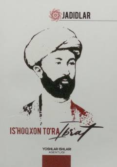

ITMa'rifatparvar va tarixnavis Is'hoqxon Ibratning hayoti hamda faoliyati haqida risola.
Mazkur risola taniqli ma'rifatparvar, shoir, tilshunos va tarixnavis Is'hoqxon Ibratning hayot yo'li hamda ijodiy faoliyatiga bag'ishlangan. Unda Ibratning noshirligi, jamoat arbobi sifatidagi ishlari va uning hikmatli so'zlari yoritib berilgan.